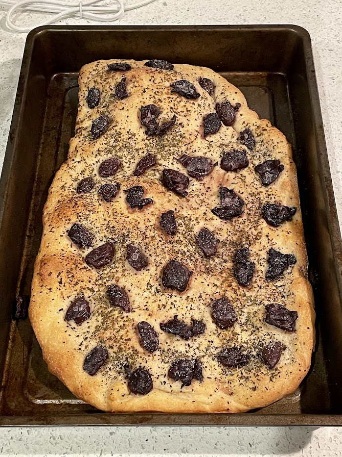
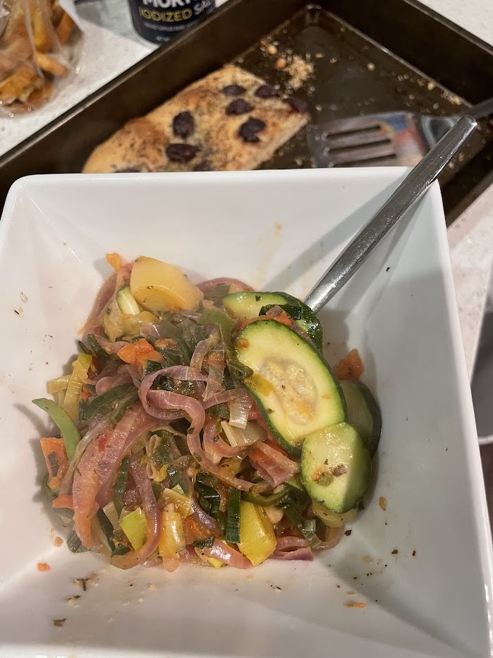

Olive bread

Olive bread
Zucchini, leeks, onions, and tomato, cooked with garlic and spices, served alongside fresh olive bread
Ingredients
- Water
- Active dry yeast
- Olive oil
- Flour
- Italian seasoning mix (or oregano)
- Rosemary
- Kalamata olives
- Coarse salt (just a little)
Instructions
Mix water, yeast, olive oil, and flour to form dough. Let that rise for a few hours. Spread it flat on a baking sheet with a tiny bit of olive oil, then sprinkle on everything else and bake at 500 Fahrenheit until it looks done.
Serving suggestion
Serve with vegetables.